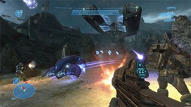
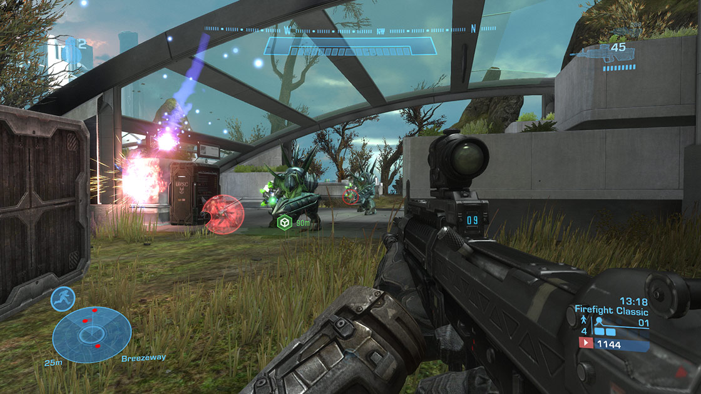
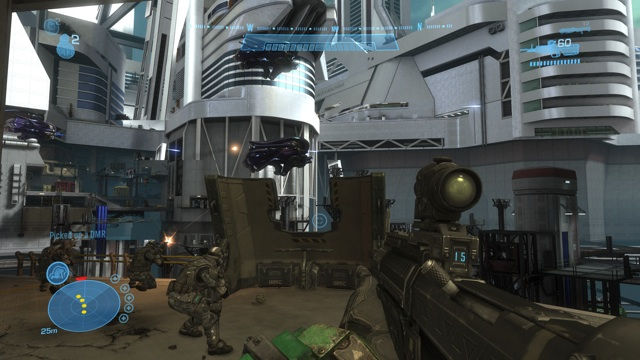
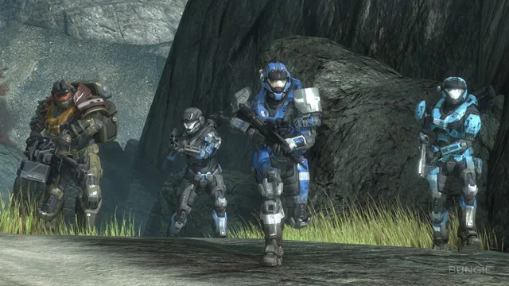
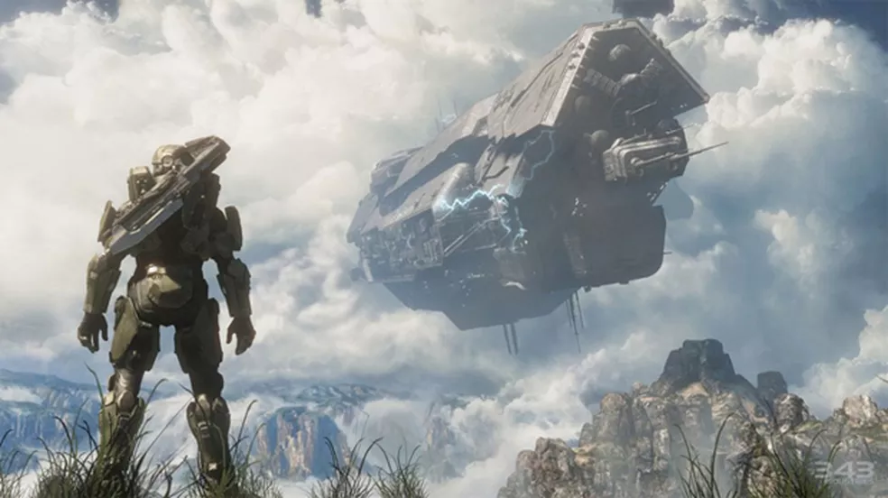
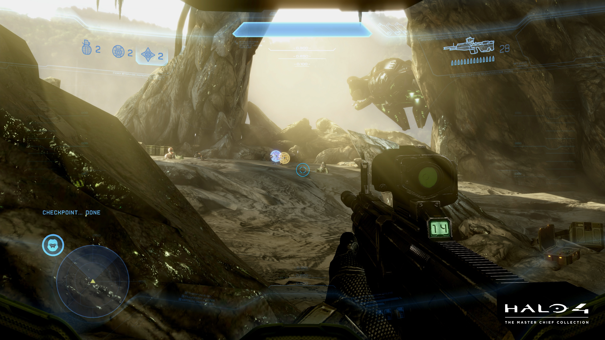
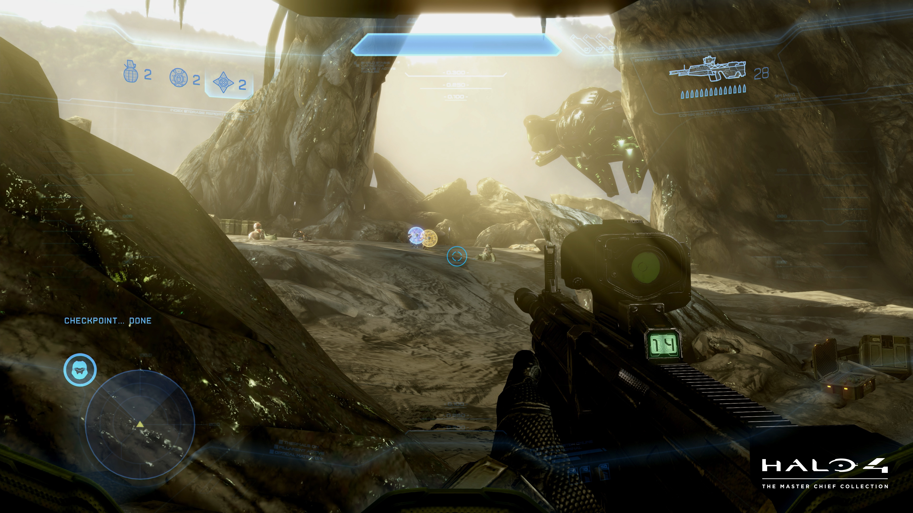
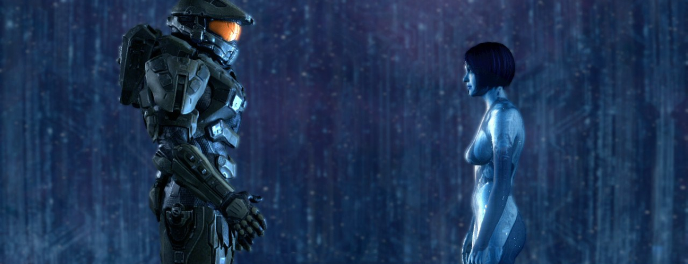
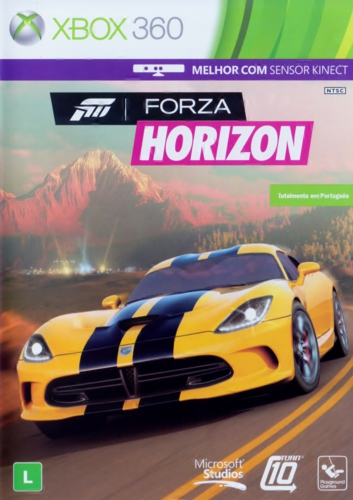

OS MELHORES JOGOS DE TODOS! By Xbox
Desenvolvido para fins educativos todos os materiais apresentados neste site foram tirados da internet
- Página inicial
- Playstation
- Nintendo
- Multi Plataforma
Por console
XBOX
Tive um xbox 360 durante um bom tempo da minha adolescência e atraves dele pude jogar games degrandes franquias pelas quais me tornei fã, aqui vamos conhecer algumas delas.
Halo: Reach

Halo: Reach é um jogo eletrônico de tiro em primeira pessoa desenvolvido pela Bungie e publicado pela Microsoft Game Studios para Xbox 360. Reach foi lançado na América do Norte, Austrália e Europa no dia 14 de setembro de 2010. O jogo se passa no ano de 2552, quando a humanidade está em guerra contra os Covenant. O jogador controla Noble Seis, um membro de um esquadrão de elite, quando um mundo humano conhecido como Reach é atacado pelos Covenant.
Após desenvolver Halo 3 em 2007, a Bungie dividiu-se em equipes para desenvolver dois jogos diferentes, que se tornariam Halo 3: ODST e Reach. Os desenvolvedores decidiram criar uma prequela da trilogia Halo original, libertando-se das obrigações de abordar tópicos anteriores da história. Como o jogo se passaria em um mundo humano condenado à destruição, os desenvolvedores focaram-se em fazer do ambiente, um personagem por si só.
Halo: Reach é um jogo de tiro em primeira pessoa que é visto, predominantemente, numa perspectiva em primeira pessoa; contudo, a perspectiva muda para a terceira pessoa ao usar certas armas e veículos. A jogabilidade é mais semelhante à de Halo: Combat Evolved do que à de jogos posteriores da franquia. O head up display mostra as armas atuais do jogador, suas habilidades e sua vida; ele também contém uma bússola e um "sensor de movimento" que registra movimentos de aliados, inimigos e veículos em um certo raio do jogador. O HUD muda quando o jogador pilota aeronaves e naves espaciais.
Na campanha do jogo, que pode ser jogada por apenas um jogador ou de forma cooperativa, os jogadores assumem o papel de Noble Seis, um supersoldado encarregado no combate contra um coletivo de alienígenas conhecido como Covenant. Os Covenant apresentam-se em oito variedades distintas com diferentes categorias e classes para cada uma; por exemplo, Elites são os líderes de um grupo, enquanto Grunts são menos inteligentes e só são perigosos em grupos grandes. O personagem do jogador é equipado com um escudo de energia que se recarrega e absorve dano de armas e impactos. Quando o escudo de energia é esgotado, o personagem do jogador perde vida. Quando a vida chega a zero, o personagem morre e o jogo recarrega do último ponto de controle. A vida é recuperada usando pacotes de vida espalhados pelas fases de Reach. Os encontros com inimigos na campanha são tipicamente grandes, com áreas abertas, locais para se proteger do fogo inimigo e pontos de vantagem estratégicos. Uma novidade à franquia Halo são sequências de dogfight no espaço.
Reach conta com versões atualizadas de armas antigas, além de novas armas cumprindo vários papéis no combate. Em Halo 3, o jogador pode usar power-ups de uso único que oferecem vantagens ofensivas ou defensivas. Este sistema de uso único de equipamentos é substituído em Reach por habilidades de armaduras reutilizáveis que permanecem com o jogador até que sejam substituídas. As habilidades são uma mochila a jato, camuflagem invisível, correr a grandes velocidades, um holograma que cria uma réplica do jogador e corre até um objetivo, um escudo que recupera vida e protege quem estiver dentro e, por fim, um bloqueio de armadura que imobiliza o jogador, mas lhe dá invencibilidade por um curto período. Ao jogar como Elites dos Covenant, os jogadores também têm acesso a uma habilidade de esquiva.
  
ENREDO
jogo inicia-se com a vista do planeta Reach em ruínas, e, então, a cena volta para acontecimentos anteriores à invasão Covenant. A Equipe Noble, enviada para descobrir por que um relê de comunicações foi desligado, descobre forças Covenant em Reach. Logo após, a equipe defende a Base Sword, uma instalação do Escritório de Inteligência Naval (ONI), a partir de uma nave Covenant capturada. A equipe conhece, então, Catherine Halsey, uma cientista e o "cérebro" por trás do programa Spartan e sua armadura, MJOLNIR. Halsey informa à Equipe Noble que as forças Covenant estavam em busca de informações importantes.
Jun e Seis são enviados em uma missão secreta para avaliar as tropas Covenant e descobrem uma grande força de invasão no planeta. Na manhã seguinte, a Equipe Noble auxilia as forças do UNSC em um assalto a uma base terrestre Covenant. Quando um supercargueiro Covenant se junta à luta, Jorge e Seis partem em um plano para destruir o cargueiro utilizando uma bomba improvisada. Os Spartans usam caças de ataque para se infiltrar em uma corveta Covenant, preparam a bomba e traçam um rumo para se atracar ao cargueiro. O temporizador da bomba é danificado, então, Jorge fica para trás e sacrifica-se, destruindo o cargueiro. Momentos depois, um grande número de naves Covenant chega a Reach para iniciar uma invasão em grande escala.
Seis retorna à superfície e viaja para a cidade de New Alexandria. O Spartan auxilia os militares na região na luta contra os Covenant e na evacuação de civis, reunindo-se novamente com a Equipe Noble. Eles se retiram para um bunker subterrâneo quando os Covenant começam a bombardear a cidade com plasma, mas Kat é morta por um Elite antes de alcançá-lo. Chamada novamente à Base Sword, a Equipe Noble é guiada pelo subterrâneo para um antigo artefato que Halsey acredita ser a chave para vencer a guerra contra os Covenant. Seis, Carter e Emile são, então, enviados em um transporte com a inteligência artificial Cortana – e informações sobre o artefato – para a nave UNSC Pillar of Autumn (Pilar do Outono). Jun deixa a equipe para escoltar Halsey para outra base.
Em rota para a doca do Pillar of Autumn, Carter é gravemente ferido. Ele, então, guia sua nave em direção a uma plataforma de ataque Covenant, abrindo caminho para que Seis e Emile cheguem às docas. Emile usa um canhão para defender o Autumn enquanto Seis luta com forças terrestres Covenant para levar Cortana ao capitão do Pillar of Autumn, Jacob Keyes. Quando Emile é morto por Elites, Seis fica para trás para controlar o canhão, assegurando a fuga do Autumn. O Pillar of Autumn traça um rumo e descobre um dos anéis da matriz (Halo), e o decorrer da história se desenrola em Halo: Combat Evolved.
A cena pós-créditos coloca o jogador no controle de Seis em uma última luta contra uma esmagadora força Covenant. Depois de sofrer danos pesados, Seis tira seu capacete, é rendido e, por fim, morto. A cena seguinte mostra anos mais tarde, com o capacete de Seis ainda nos gramados da planície de Reach, agora restaurada. A narração de Halsey elogia a Equipe Noble, que permitiu a vitória da humanidade sobre os Covenant.
Minha Historia com o Game
A primeira vez que vi Halo Reach foi na casa de um primo meu, eu fiquei impressionado não so pelo game mas sim também porque foi a primiera vez que vi um video game mais avançado que o play2, que era o meu console na época. O jogo era extremamente divertido e tenho otimas memórias sobre ele, as mais divertidas com certeza são da época em que esse meu primo morava perto de mim, pois como halo suportava uma campanha multiplayer e também tinha o modo fornalha que era um mundo sandbox, passavamos horas e horas dentro de jogo nos imaginando como soldados UNSC que tinham que proteger o mundo da ameaça dos Covenants. E foi impressionante como um personagem novo como Noble 6, personagem que controlamos, conseguiu ser tão carismatico quanto o Master Chief. Foi o Halo que mais joguei.
Halo 4

Halo 4 é um jogo eletrônico de tiro em primeira pessoa desenvolvido pela 343 Industries e publicado pela Microsoft Studios exclusivamente para o Xbox 360. É o quarto segmento da linha principal e a sétimo no geral da franquia Halo, o jogo foi lançado em 6 de novembro de 2012. Halo 4 é o primeiro de uma nova trilogia de jogos da franquia Halo, nomeada de "trilogia Reclaimer" ("trilogia Reclamante" em tradução livre). Halo 4 começa quatro anos após o final de Halo 3, seguindo o supersoldado humano ciberneticamente aprimorado, Master Chief, e sua constructo IA Cortana,enquanto encontram ameaças desconhecidas ao explorar um planeta de uma civilização antiga. O jogador assume o papel de Master Chief, que luta contra uma nova facção que se separou dos remanescentes do Covenant, uma antiga aliança militar de raças alienígenas, e contra os guerreiros mecânicos do império Forerunner, conhecidos como Prometheans. O jogo apresenta uma seleção de armas, inimigos e modos de jogo que não estão presentes nos títulos anteriores da série.
O desenvolvimento de Halo 4 começou em 2009 e continuou até setembro de 2012. Halo 4 é o primeiro título original da 343 Industries na série Halo - anteriormente, o desenvolvimento da série principal era realizado pela Bungie, criadora da franquia. No processo de desenvolvimento, a 343 Industries decidiu explorar a ficção Forerunner no universo Halo, levando a equipe a projetar um novo cenário, inimigos e antagonista principal. Os personagens e ativos existentes receberam revisões visuais, recriados do zero e a captura de movimento foi usada para animação em cutscenes. Um objetivo da história de Halo 4 era incorporar mais elementos humanos; para conseguir isso, os desenvolvedores optaram por aprofundar o relacionamento entre os dois protagonistas, Master Chief e Cortana. Vários estúdios externos ajudaram a 343 Industries no desenvolvimento de Halo 4, e mais de 350 pessoas trabalharam no jogo.

ENREDO
Quatro anos após os eventos de Halo 3, ainda flutuando no espaço no que sobrou da fragata Forward Unto Dawn, que parou orbitando o planeta artificial Requiem. Cortana desperta Master Chief do sono criogênico pouco antes de forças Covenant abordarem a nave. O que restou da Dawn é capturado pela gravidade de Requiem, passando através de uma abertura na superfície do planeta para então chocar-se no seu interior.
Logo que Chief e Cortana iniciam a exploração de Requiem, iniciam-se também os combates com os hostis Covenant e Prometheans (raça artificial criada pelos Forerunners), bem como as anomalias com Cortana.Ela revela que, passado o habitual período de funcionamento de um AI (sete a oito anos), ela está tornando-se "rampant", um estado mental em que o AIs em declínio lentamente passam a "pensar" na morte. Chief promete a Cortana que a levaria de volta à Terra, acreditando que sua criadora, Drª Catherine Halsey, pode curar ou reverter a condição de Cortana.
Chief e Cortana captam as transmissões distorcidas de uma nave humana, UNSC Infinity, que captou a chamada de socorro da Dawn. Cortana tenta avisar a Infinity para ficar longe da gravidade de Requiem e direciona o Chief para desativar o que ela acredita que seja sistemas comunicações. Em vez disso, Chief libera Ur-Didact, um antigo guerreiro Forerunner, de sua prisão. Didact assume o comando dos Prometheans e Covenant e inicia os ataques à Infinity, logo depois que ela é puxada para Requiem.
Chief faz contato com a Infinity e religa as armas para repelir o ataque de Didact. Chief e Cortana recomendam atacar a Didact enquanto ele é vulnerável, mas o capitão da Infinity, Del Rio, ordena-lhes para destruir a gravidade artificial e, assim, a nave poder escapar. Neste meio tempo, Chief é contatado por uma Forerunner conhecida como a Librarian, a esposa de Didact, bem como a antiga protetora da humanidade. Ela explica que os Forerunners foram divididos sobre como combater os Floods. Após uma falha para descobrir uma forma de imunizar seres biológicos contra os Floods, Didact usou um dispositivo chamado de Composer para converter os guerreiros Prometheans sob seu comando em versões digitais, imunes à infecção. Exigindo mais soldados, Didact forçadamente converte os seres humanos capturados em Prometheans, antes de ser detido e preso pela Librarian.A Librarian, que tem guiado a humanidade ao seu desenvolvimento, acelera a evolução de Master Chief, concedendo lhe imunidade ao Composer. Depois de destruir a gravidade de Requiem, o Capitão Del Rio ordena que regressem a Terra, duvidando do depoimento de Cortana e Chief. Master Chief desobedece as ordens de retornar e, apesar do mal-funcionamento Cortana, insiste em permanecer na perseguição à Didact. O Comandante Lasky, da Infinity, dá a Chief um transporte armado (nave Pelican) e deseja-lhe boa sorte na luta.
Chief e Cortana tentam sabotar a nave de Didact antes que ele parta, mas como eles foram mal-sucedidos, perseguem a Didact a um anel Halo, Instalação 03. O Composer foi transferido do Halo para as proximidades da Estação de Pesquisa Ivanoff, que passar a ser atacada pelas forças Covenant. Master Chief defende a base Ivanoff, mas Didact recupera o Composer e o dispara contra a estação, desintegrando a todos, exceto a Master Chief. Chief e Cortana então utilizam uma nave caça para perseguir a Didact da nave através do “slipspace” (tipo de portal buraco de minhoca) que segue rumo a Terra. Com a ajuda da Infinity e forças da UNSC, Chief aborda a nave de Didact com um artefato nuclear, enquanto Cortana faz duplicatas de si mesma, na tentativade sobrecarregar os sistemas de proteção de Didact, que dispara o Composer contra a Terra por um corredor slipspace. Com a ajuda de Cortana, que consegue deter a Didact com suas duplicatas por alguns instantes, Chief consegue sobrepujar a Didact e detonar a bomba.
Chief acorda dentro de uma blindagem de luz sólida, criada por Cortana no momento da explosão, quando ela aparece explicando que eles foram bem-sucedidos em destruir o Composer e que ela o salvou, embora ela não possa mais voltar com ele.[14] Cortana então toca a armadura de Master Chief, da meia volta e desaparece. Master Chief é então encontrado por uma equipa de salvamento da UNSC e é levado de volta para a Infinity, onde se lamenta com o Comandante Lasky sobre a perda de Cortana, sobre a Terra, sobre o dever, e o sobre o seu dever como soldado. Lasky repete algo dito anteriormente por Cortana sobre a questão de não ser apenas uma máquina, guiada pelo dever de proteger a humanidade.
Em uma cena pós-créditos, as forças da UNSC descem sobre a cidade de New Phoenix, localização onde Didact usou o Composer brevemente sobre a Terra, encontrando todos os seus habitantes mortos desintegrados. Em uma narração final, Didact proclama o papel dos Forerunner como guardiães da galáxia e sobre terem que suportar o Manto da Responsabilidade, e sobre a humanidade ser a maior ameaça na galáxia. Master Chief remove sua armadura a bordo da Infinity, e se o jogador completar o jogo na dificuldade “Legendary” (lendário), os olhos de Master Chief são mostrados rapidamente.
 
 Minha Historia com o Game
Antes de Halo 4 eu ja tinha jogado varios outros Halos, porém eu não entendia muito bem o lore dosse universo, só que quando joguei Halo 4, eu ja tinha pesquisado muito a historia principal da saga e daquele universo e por conta disso eu tenho basntate carinho por esse jogo, pois pude aproveitar a relação e a tensão entre os personagem, entreo Chief e a Cortana, a "despedida" dela, pude entender para onde a historia daquele mundo estava indo e tive uma surpresa muito agradavel por conta disso, a mesma que ive que Assassins Creed, a de descobrir que a historia daquele mundo ia além de tudo o que eu podia esperar para aquela historia, simplesmente fantastico.
Forza Horizon



Em relação a Forza Horizon, não vou selecionar um jogo especifico, mas sim falar sobre toda essa maravilhosa franquia de jogo de carro, que na minha humilde opinião é a melhor de todo o gênero de jogos de corrida de mundo aberto.
Forza Horizon é um jogo de corrida exclusivo para o console Xbox 360 e retrocompatível com Xbox One com melhorias e resolução 4K Desenvolvido principalmente pela desenvolvedora britânica Playground Games em associação com a estadunidense Turn 10 Studios, o jogo faz parte da franquia Forza, porém é mais considerado um spin-off ao invés de um membro da série principal. Em 20 de outubro de 2016, o jogo foi removido da loja da Microsoft. Forza Horizon 2, 3 e 4 sairam para Xbox One.
Forza Horizon é um jogo em um festival, chamado Festival Horizon que ocorre no estado do Colorado. O objetivo é progredir no jogo para obter pulseiras por pilotar depressa, destruir propriedade, vencer corridas de pilotagem. Horizon apresenta as físicas de Forza Motorsport 4. O jogo, porém, apresenta características diferentes, tendo uma jogabilidade considerada mais "arcade" em relação ao Forza Motorsport 4. Os jogadores são capazes de dirigir a qualquer lugar que seus carros possam chegar, como campos e planícies, embora muitas estradas usem muretas ou cercas para limitar o jogador.
Vários tipos de corrida estão incluídos, de drift a rally, passando por corridas ponto a ponto. O tráfego da inteligência artificial está presente nas estradas,Forza. Os jogadores também podem desafiar outros pilotos do Festival Horizon que encontrarem para uma corrida um contra um em um local determinado. O local é sempre aleatório e a inteligência artificial tem a capacidade de cortar caminho para tirar vantagem. As corridas ocorrem em tempos diferentes ao longo do ciclo de dia e noite incluído no jogo, incluindo corridas noturnas. O sistema de habilidade está implementado no jogo para que os jogadores ganhem credibilidade nas ruas durante as corridas por dirigirem perigosamente. Atos como drifting, saltos sobre obstáculos e fazer com que o carro fique em duas rodas contribuem para o aumento da credibilidade. Isto pode ser feito em sequência num combo, que por sua vez afeta o dinheiro pago no final da corrida. A credibilidade também afeta o nível de popularidade do jogador no jogo. Conforme a popularidade do jogador aumenta, novos eventos especiais chamados de Eventos de Armação são desbloqueados, tais como corridas contra balões e aviões.
As armadilhas de velocidade estão presentes no jogo e os jogadores podem desafiar entre si pela velocidade máxima de uma área. As câmeras gravam os tempos do jogador, que pode depois ser compartilhados entre os rivais. Estes rivais podem então tentar quebrar o tempo compartilhado. Um modo de foto também está incluído. Além das corridas, os jogadores podem procurar carros em celeiros que estão abandonados por muito tempo, para restaurá-los, e adiciona-los a sua garagem.
Minha Historia com o Game
O que eu falar aqui vale para todos os jogos da franquia, zerei o primeiro e o segundo jogo já que ambos sairam para xbox360, o 3 e o 4 eu não pude jogar pois na oitava geração eu optei por um Ps4, mas recentemente pude voltar a jogar essa maravilhosa graças a Xcloud e joguei o quinto jogo e posso dizer sem nenhuma ressalva que a franquia continua tão boa quanto ja foi, a viba de festival, o prazer de apenas dirigir pelo mapa, apreciar o própio mapa do jogo que tem uma beleza exuberante e é rico em detalhes, as músicas que toca na rádio do jogo, é tudo simplemente perfeito, jogar Forza Horizon é uma viagem que vale a pena, ao entrar você só quer uma coisa, se tornar o campeão do festival Horizon e nem é pela sensação de poder, mas sim pela diversão, para mim esse é o jogo de carro mais divertido que ja foi criado.